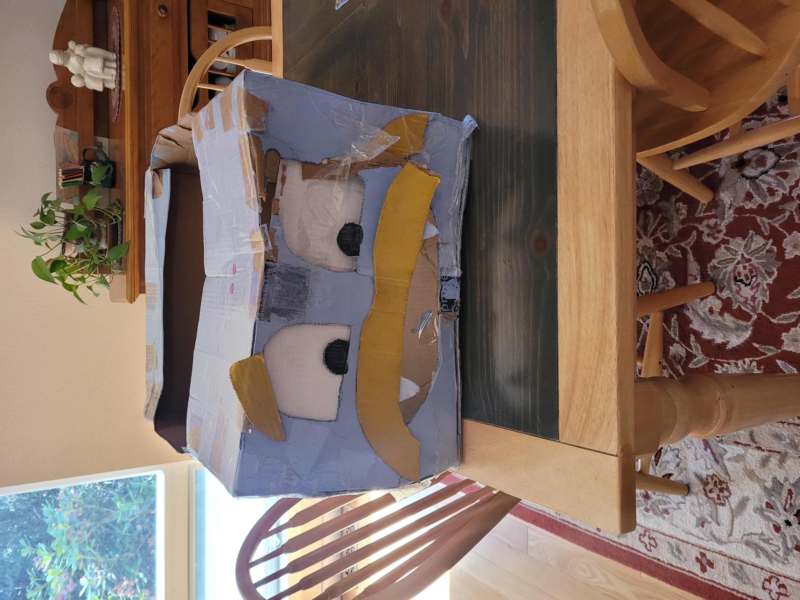
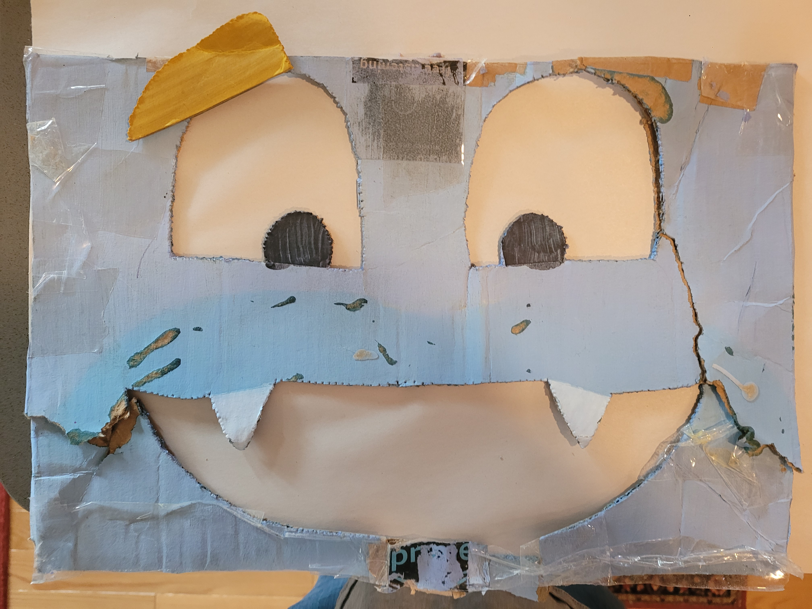
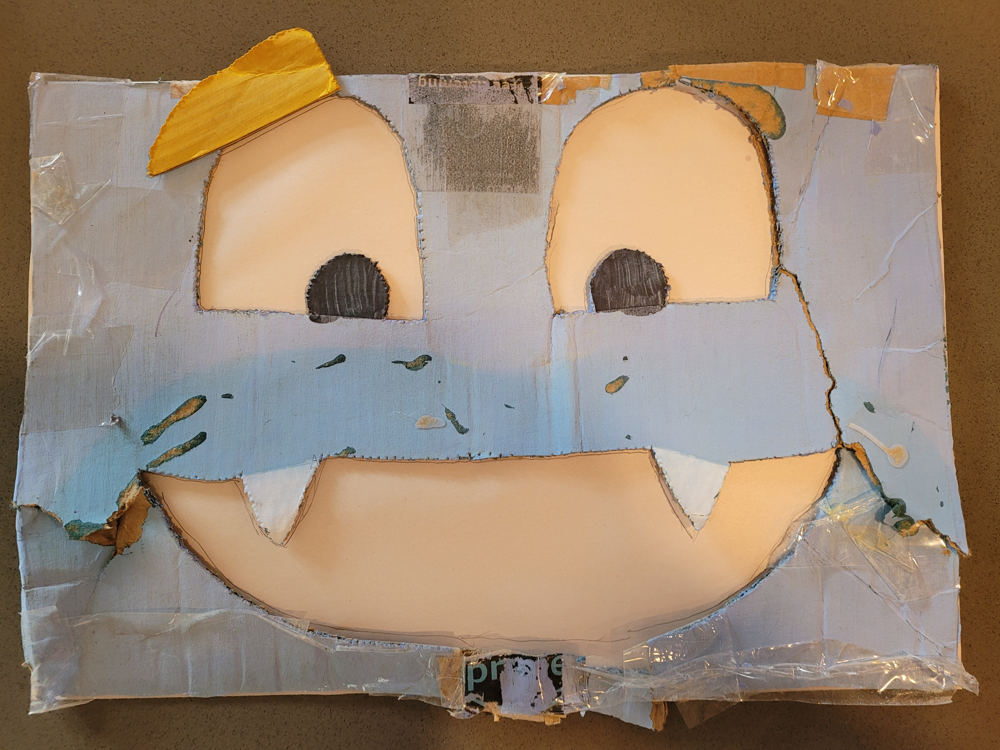

We get some advice from Claude AI on how to get from Inkscape to CNC machine.
In Claude AI's UI, I found the chat and shared it privately.
I opened the shared chat in another Chrome window and then used the singleFile Chrome extension to export the conversation with Claude AI to an html file.
But that file was weirdly completely blank visibly - although the file was huge
Tried a different approach. I copied and pasted from the browser into a new LibreOffice Writer document, and saved that document as HTML
That process involved using the File | Export function, and then changing the output format to be HTML.
Where are we?
Already kind of got started on the project before setting up this blog.
When the original scrappy came to us, he was in pretty sorry shape:

Seems he had been torn up and thrown away by janitorial staff.
We figured out his approximate dimensions and then cut out a new wooden body for him, based on those.
Now, his body is about x" high, 18" wide, and 24" deep."
His new body is made mostly of 1/2" smooth veneer plywood from Home Depot, although we can't remember exactly which product it was.
His bottom (underside) is made of a kind of outdoor-capable composite board. It's very strong.
Poor guy was missing his mustache and an eyebrow, but we put his face right as best we could:

Then we traced his mouth and eye shape onto a piece of paper with a mechanical pencil.

We used Inkscape to import a picture of his flattened face and used Inkscape to trace out the outline of his eyes and mouth.

We then used Inkscape to fill in his mouth and pupils, thinking we might draw him onto the wood with a laser etcher/engraver.
But after much experimentation, we realized that the laser wasn't going to be the right tool for the job.
We might be able to use the laser to draw his pupils, but what we really need to do is carve recesses for the whites of his eyes, and then paint them white.
Then we'll cut a hole for his mouth. His teeth can be painted white too, but we decided not to recess them because that would weaken them a bit.
My first blog entry
I did a .fork of https://github.com/pflagerd/blog-bootstrap